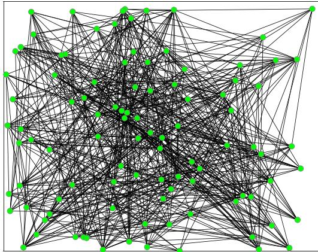
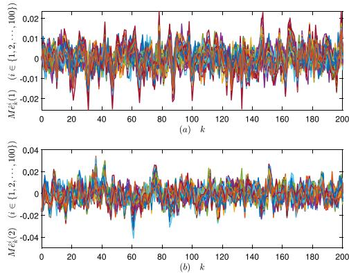
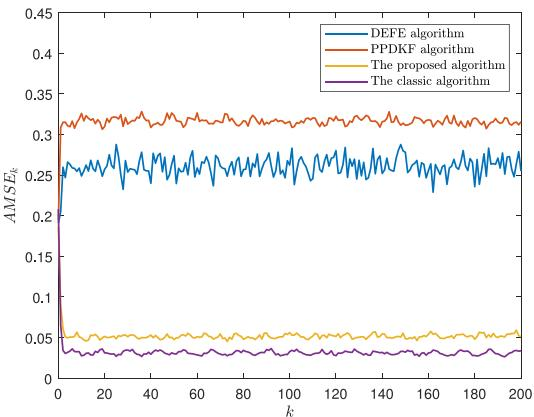

前置：全部前七课。本课是收束课，做三件事：① 把第 0113 课的"两个误差量"放回真实的 Fig. 3、Fig. 4 曲线里读懂；② 把论文的局限列成清单——诚实，但不刻薄；③ 给出一个五步迁移框架，回答"这套方法能不能用到我的 ROS2/Nav2 系统上"。
1. 实验设置：先看清"考卷"是什么
第 5 节这套实验测的是误差曲线——平均误差是否平稳、AMSE 与其他算法比是高是低。它完全没有测量任何安全性指标：没有攻击者实验、没有窃听测试、没有推断攻击的尝试。
安全性论证在理论部分（Theorem 2，第 0112 课），走的是"字段归属 + 引用 DCR 假设"的路线——那是一条独立的证据链，与这里的仿真曲线没有任何关系。
组会上最容易被说错的一句话："论文用实验证明了隐私保护有效。"——正确说法是："论文从理论上论证了隐私保护，并用数值仿真验证了估计性能的损失很小。"这两件事分属不同章节，别合并。
| 项目 | 设置 |
|---|---|
| 网络规模 | 100 个节点（拓扑见 Fig. 2） |
| 时间区间 | $k\in[0,200]$，共 200 步 |
| 系统矩阵 | $A_k=\begin{bmatrix}0.8 & 0.3\sin(k\pi/6)\\ 0 & 1+0.2\cos(k\pi/6)\end{bmatrix}$，$Q_k=0.1I$（2 维状态） |
| 测量配置 | 节点 1–50：$C=[1,0]$，$R=0.02$；节点 51–100：$C=[0,1]$，$R=0.05$ |
| 融合权重 | $w_{ij}=1/|\mathcal N_i|$（均匀权重） |
| 统计方法 | 500 次蒙特卡洛（系统矩阵固定，只重抽噪声实现） |
| 初始条件 | $u_0^i=[0;0]$，$P_0^i=0.1I$，$x_0\sim\mathcal N(0,0.1I)$ |
图 1：网络规模是这篇论文的实验特点——100 个节点证明方法可扩展；同时这也提醒我们：这是大规模数值仿真，不是 3–5 台机器人的协同实验。这个区别在第 3 节会展开。

两个评价指标先认识（原文式 (17)–(18) 的定义）：
是什么：$M\hat e_k^i$ 是"先对 500 次试验取平均，再看误差"——这正是第 0113 课说的一阶矩的量；$AMSE_k$ 是"先平方再平均"——二阶矩的量。
直觉：对应 0113 的靶心图——$M\hat e$ 看的是"平均落点偏不偏"，$AMSE$ 看的是"散布大不大"。
细节（论文的配套关系）：Theorem 3 的理论承诺是 $\|\mathbb E[\hat e]\|$ 有界 → 由 Fig. 3（画 $M\hat e$）来直观支持；而 Fig. 4（画 $AMSE$）是数值证据，不是定理的直接推论。读图时把"哪张图对应哪条定理"对上号，就不容易被"看起来很稳"的曲线带着走。
2. 带读原文三张图
Fig. 2：网络拓扑
100 个节点的通信图。它回答的问题是"方法在大规模网络上跑不跑得动"——不是"通信开销小"的证明。通信次数在 Remark 1 里单独算（0111 课）。
Fig. 3：平均误差 $M\hat e_k^i$ 的两个维度

这张图里曲线平稳，说明一阶矩不出问题。但切记：它不能单独用来论证"估计器稳定"——0113 课的靶心图已经演示过，均值平稳可以与散布很大并存。要看散布，得看 Fig. 4。
Fig. 4：AMSE 对比（本文 vs PPDKF vs DEFE vs 经典算法）

| 对比对象 | 结果 | 为什么（论文的解释） |
|---|---|---|
| 经典算法（无隐私） | 本文方案略差 | 量化误差 + 随机权重带来的轻微保守 |
| PPDKF（隐私保护） | 本文方案更好 | 改进 Paillier 的失真小于差分隐私噪声注入 |
| DEFE（隐私保护） | 本文方案更好 | 同上 |
自测：这两条曲线你读对了吗？
三个判断题，点开看解析。
论文的核心卖点：隐私保护的"价格"比同类方案便宜——用很小的精度损失，换到对强合谋级别的保护。
读图练习题
判断对错并说明理由：①「Fig. 3 曲线平稳，说明论文证明了估计器均方误差有界。」②「Fig. 4 显示了本文方案优于经典算法。」③「这两张图证明了方法在真实机器人系统上有效。」
展开答案与解释
3. 论文局限清单（诚实且完整）
好论文的局限清单不是"找茬"，而是"给迁移者画清楚边界"。按严重程度排列：
| # | 局限 | 对迁移的含义 |
|---|---|---|
| 1 | 强合谋假设是"被动"的：HBC 遵守协议，不伪造、不篡改。 | 真实系统里要搭配消息认证与鲁棒估计（0112 清单）。 |
| 2 | 证明中的近似与系数出入：式 (12) 的 $\lambda$ 与算法不一致；"量化足够大 ⇒ ≈"的处理未逐项保留；随机权重带来的条件性问题未展开。 | 引用该结论时用"作者论证"的表述，不用"已严格证明"。 |
| 3 | 一阶矩与均方误差的措辞不一致：Theorem 3 的公式是一阶矩，正文引导语用 mean square。 | 汇报时说"平均误差有界"，别说"均方稳定"。 |
| 4 | 通信账单只算了次数：密文体积、加密计算时间、密钥管理没计入。 | 部署前必须实测总时延——见第 5 节检查清单。 |
| 5 | 公开字段有限：符号模式、编码尺度、$H$、拓扑等元信息未保护。 | 先做一次"可见信息评估"，见 0112 清单。 |
| 6 | 实验规模与场景：纯数值仿真：100 节点、线性时变系统、$\mathcal Q_k^i$ 与 $T=500$ 次试验的细节未全公开（如精确邻接矩阵、密钥参数）。 | 复现前先假设"有信息缺口"，预留自己的参数设计工作。 |
| 7 | 编码尺度受 A2 上界约束："$Q\to\infty$"不可行，量化误差不可能被消干净。 | 设计时要找"够用就行"的 Q，别追求理论极限。 |
| 8 | 只处理线性时变系统：非线性（EKF/UKF 场景）不在覆盖范围。 | 机器人上要先用非线性滤波框架——本身就是一个开放问题。 |
4. 迁移到机器人系统：能做什么、不能做什么
下面把论文的能力映射到一台（或一组）ROS2 机器人上。这张表是教学整理，不是论文的实机结论——论文没做任何机器人实验。
图 2：五种"论文假设 ↔ 机器人现实"的对照。绿色是可以直接映射的、金色是有价值但有条件的、红色是需要额外工程或重构的。注意：这是课程整理的教学映射，不是论文声称的应用结论。
三种可行的介入模式（按侵入性从小到大）
只在输出侧加保护
保留现有滤波/融合架构，只在"与外部共享估计结果"的环节加隐私保护（比如对外发布的拓扑或统计量）。前提：能找到明确的"对外接口"。收益有限但工程最简单。
换掉融合段
最贴近论文的用法：把多机器人协同定位/建图里的"协方差融合段"替换成隐私保护版本（Algorithm 3）。前提：融合是 CI 类（或能改写为 CI）。这是论文直接支持的用法。
与健康监测/故障诊断结合
把"隐私保护融合"当作一层基础设施，为多机器人故障诊断共享"诊断特征"提供安全通道（各家的故障特征也是敏感信息）。这是一个开放性研究方向——论文没有做，但思路上有接口。
什么时候不值得用
如果节点同属一个可信域（同一台机器人、同一实验室的封闭网络）、或者数据本身无所谓隐私——这套加密的复杂度就不值当。隐私保护是有成本的选择，不是默认必须。
5. 五步迁移框架（给你的研究用）
- 对齐问题结构（1–2 天）。先问三个问题：我的系统是不是"多个节点各自观测同一状态"？我的融合是不是"加权求和"结构？节点间是不是有隐私边界？三个都是"否"，说明这篇论文解决的不是你的问题，尽早换路。
- 写清假设对照表（1 周）。把论文的 Assumptions 1–4 与你的系统逐条对照（第 4 节的图 2 就是模板）。特别检查：非线性怎么办？通信图连不连通？$A_k$ 是否一致非奇异（A4）？标出每一个"需要新论证"的差距。
- 离线数值验证（2–4 周）。先在 MATLAB/Python 里搭一个小规模（3–5 节点）的仿真：复现原文的融合逻辑（不一定要复现 Paillier，可先用"理想加密"抽象掉密码层），验证融合结果与经典 CI 的差异量级。这一步的目标是理解，不是复现。
- 真实密码层与性能实测（2–6 周）。换用真实的 Paillier 实现（比如 Python 的 phe 库），在目标硬件（Jetson/Raspberry Pi/笔记本）上测：单次编解码+加解密+同态运算的耗时、100 节点规模下的通信开销（密文多大、多发多少字节）。用这些数字回答"能不能进 10–100 Hz 的控制回路"。
- 写进行论文时——贡献表述（写作阶段）。把你的工作表述为"把隐私保护融合用于 X"而不是"提出了隐私保护融合"；贡献在于迁移与适配（非线性处理、ROS2 工程化、真实时延数据、与你的故障诊断场景结合），引用本文时用"作者提出并论证"的措辞（对照第 3 节局限清单）。
① 论文的开放性缺口本身就是选题机会：非线性系统扩展（A8 之外的最大空白）、有限精度的严格证明（补上式 (12) 与 ≈ 的缺口）、真实机器人实验（论文完全没有）——这三个都是明确可做的方向。② 别把"用了 Paillier"当作新颖性。新颖性在于隐私保护与你的问题结构的结合方式。
6. 全课程收束：八课的能力自检
学到这里，回头测一测。下面每一条都对应前面某一课的核心产出——能顺畅说出来的，就是真掌握了。
能力自检清单（点条目打勾，状态存在本地）
这不是考试，是索引——哪条说不上来，就回到对应课复习。
全部打勾说明你已具备"用这篇文章写研究计划"的基础。
7. 合上正文，试着回答
练习一：表述的精确性
把下面这句话改精确：「论文证明了隐私保护方法比经典方法精度更高，并在机器人上得到验证。」
展开答案与解释
练习二：把局限写成研究计划
从第 3 节的局限清单里挑两条，各写一句"如果我来做下一步研究"的设想。
展开答案与解释
练习三：向导师介绍这篇论文（60 秒版）
用一分钟说清楚：问题、方法、结果、你能用它做什么。
展开答案与解释
① 方法地图：编码（0109）→ 加密交互（0110）→ 融合恢复（0111）→ 装回估计器（Algorithm 3）——"把加权求和搬到密文上做"是全部设计的灵魂。② 证据地图：安全（Theorem 2，0112）与稳定（Lemma 3 / Theorem 3，0113）是两条独立的证据链，各有各的前提与边界，都不能被"用了加密"或"曲线平稳"含混带过。③ 迁移地图：非线性、有限精度、实机验证是最明显的三个缺口，也是你写研究计划时最自然的切入口。
这是全系列最后一课。如果还有哪一节课的内容想重听、哪一条公式想再拆一遍，或者你想把某个迁移设想展开成具体的实验方案——随时发给我，我们从那里继续。
原文阅读定位
本课对应原文 Section 5（数值实验与 Fig. 2–4）、Section 6（结论）；局限清单综合了全文各处（式 (12)、Theorem 3 措辞、Remark 1–3 与实验设置）。来源：论文 DOI。本课是中文教学解读，不是逐字翻译。文中的"机器人迁移"部分为课程整理的教学联系，不是论文的实验结论。